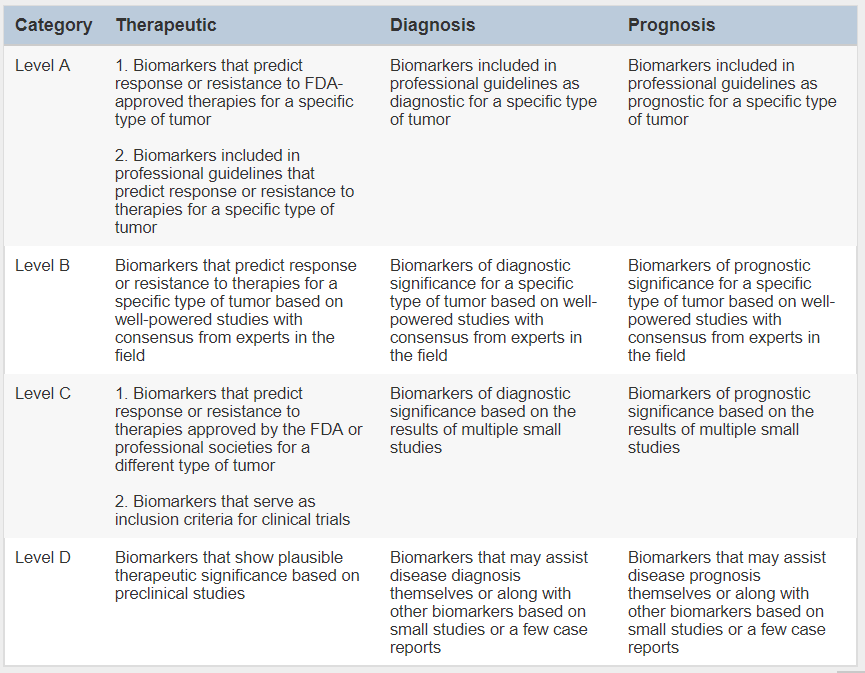
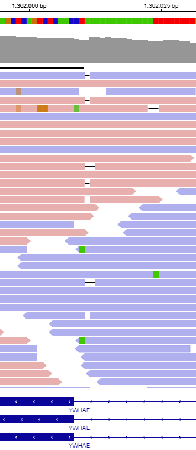
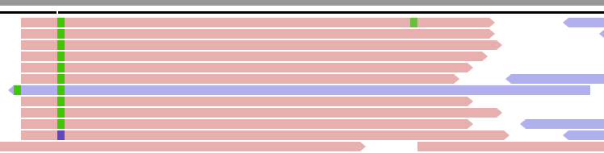
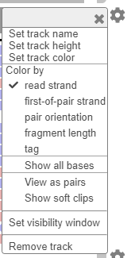
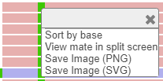
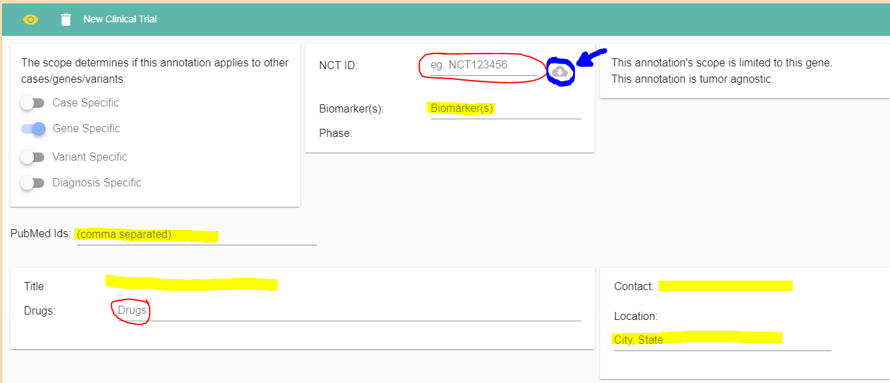
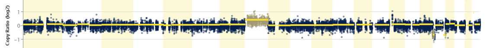
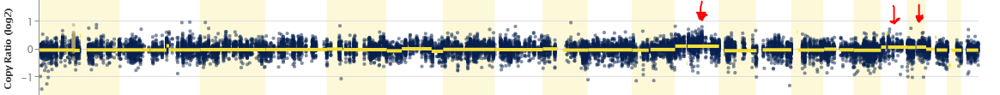

How to Start an NGS case¶
1. Find case in ANSWER and assign yourself¶
Log into ANSER using UTSW credentials (answer.biohpc.swmed.edu)
On the dashboard search for a case and in the right-hand column, click the clipboard with a figure on it.
Then select the button next to your name. The button will turn blue.
{kind=link}
{kind=link}
2. Standard Filtering Strategies¶
The principle goal of the assay is the determine somatic variants. As blood can often contaminate saliva (up to 20-30% VAF), the reviewer must determine what level of contamination is present in your case. This is mostly relevant for Hematopoietic malignancies.
Open the Filter Bar and select PASS QC
To remove recurrent False Positives (technical artifact), Set Repeat MAX to 10
Sort the Normal Variant Frequency from Low to High.
Look for Tumor VAF >10% compared to the Normal VAF.
Alternatively, if you can find a clearly pathogenic variant, the Normal VAF of that variant will represent tumor contamination.
3. Creating Variant Cards¶
Variant is somatic, but VUS: Select Gene function and select Tier 3. Nothing else needs to be created.
For help in describing the gene function, click on Look Up Tool- gene level This will take you to information on this specific gene including gene function.
For help determining the specific significance of a variant, click Look Up Tool- Variant This will show information specific to a variant. Several databases are pulled together into one place. For more information, you can click links here for ClinVar, dpSNP, and COSMIC. These can quickly direct you to helpful databases directly.
Variant is somatic with Prognostic significance: Select Prognostic, and determine Tier.
Variant is somatic with Diagnostic significance: Select Diagnostic, and determine Tier.
{kind=link}
Variant is somatic with Therapeutic significance: Select Therapeutic, Enter Drugs, determine Tier. Select whether vairant indicates resistance to drugs.
Epidemiology Select this category when you describe the prevalence of a variant in a specific cancer type or several cancer types. For example: KRAS G12D is common in adenocarcinoma or JAK2 V617F is present in almost all myeloproliferative neoplasms.
Variant Function can be selected when the variant may have a special function like Gain of Function.
If you have access to the BAM files, the desktop version of IGV has many resources to determine if a variant is worth considering. IGV is available here: https://software.broadinstitute.org/software/igv/
If you do not have direct access to the BAM files, Answer provides 3 ways to view them in IGV.
After opening a SNP with the  button, open the IGV menu in the toolbar at the top:
button, open the IGV menu in the toolbar at the top:
Web IGV: use this option if you do not have IGV installed on your computer or just need to quickly look at a SNP.
Desktop IGV (auto load): this button will launch IGV on your computer and load all available bam files. Use this option for a more detailed view of a SNP.
Desktop IGV (manual load): even if IGV is installed on your computer, some security settings may prevent you from automatically launching and loading bam files from the web. This button will download a session file that you can open in IGV manually (File -> Open Session).
This will load the three BAM files for the case: tumor, normal and RNA (if available).
Likely Artifact Select this category along with the Variant specific button to denote a variant that was called as positive, but upon review of IGV, it was found to be an artifact for any of the following reasons: Homopolymer run Many T’s, A’s, G’s or C’s in a row.
Strand Bias Variant is mostly (>~70%) on reads in one direction.
You can determine this by coloring the reads by Strand and right clicking on the base and sorting the variants by base.
 - Multinucleotide Repeat This can be hard to catch, but if you see the nucleotides go to lower-case and an insertion or duplication is present, then the result could just be an artifact.
Sometimes, ANSWER has identified a variant in a repeat region and has marked it with a yellow flag with one or more letters indicating a warning type (R for Repeat region for instance). Hover the letter with your mouse to see what kind of warning has be found for this variant. Proceeed with caution when selecting this variant.
Selecting Clinical Trials If you find an applicable clinical trial click Add Trial, Next to the “Add Annotation” button. Fill in all of the information circled and highlighted below. Or if you add the NCT number, then the Cloud button (blue circle) the information should autopopulate.
{kind=link}
- Change Transcript Sometimes the default transcript doesn’t contain the most pathogenic variant.
The transcript can be changed manually to select the desired annotated variant as shown below.
4. Creating CNV Cards¶
If there is a CNV called, click the magnifying glass to look in greater detail. If NO CNV is called, you can still check manually by clicking the Empty magnifying glass.
Determining the level for +1 or -1 is based on the percent of the tumor present. Sometimes it is straight forward like with this trisomy 8 in a sample that is majority tumor with no germline contamination.
{kind=link}
However, when the percent tumor is lower, it can be difficult to call CNVs. The red arrows indicate trisomies of 3 chromosomes that were called by cytogenetics. The chromosomal gain is barely perceptable and would not be called without confirmatory cytogenetics.
{kind=link}
Chromosomal: For large chromosomal deletions. Then for the card, enter any Diganostic, Prognostic, or Therapeutic significance of the finding. Focal: For small deletions or gain from a few exons to a few genes. Select the affected gene that has the most Diagnostic, Prognostic, or Therapeutic significance.
Case specific information will usually pertain to any interactions with the CNV and other CNV’s or other variants.
All Cases: all cases, regardless of who is assigned. You can change who should work on a case, view a case (read only mode) or open a report (if a report is ready). You can also assign groups to a case (admins only)
Cases Finalized: if a report for a case has been finalized (progress level 4), the case will be displayed in this table. You can print finalized reports.